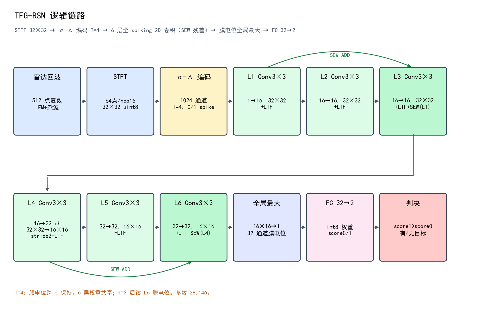
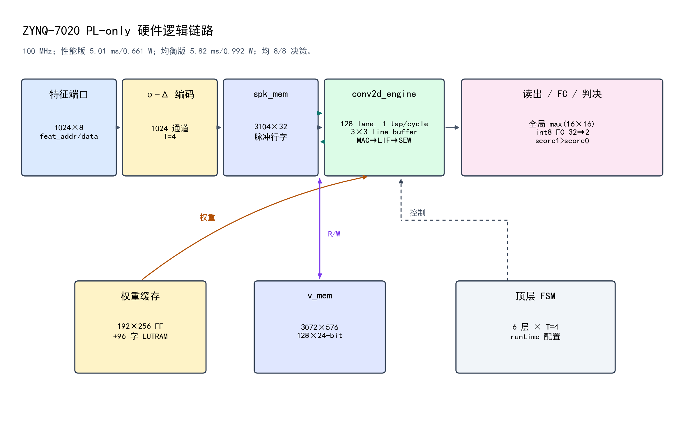

雷达回波目标检测通常先做匹配滤波/FFT，再用 CFAR 在距离-多普勒或距离-方位平面上判决。恒虚警门限在均匀高斯杂波中有效，但在低信噪比（SNR）、K 分布重尾杂波、海尖峰、窄带干扰和波形失配同时存在时，固定统计模型容易失配，检测概率下降或虚警升高。深度学习可以把特征提取与判决联合起来，但常规 CNN/Transformer 的乘加与存储开销较大，不利于在小型 FPGA 上做低功耗、低延迟部署。
脉冲神经网络（SNN）用 0/1 脉冲和膜电位代替连续激活，乘加可以退化为“条件加”，在神经形态芯片和 FPGA 上具有潜在能效优势。近几年，雷达领域开始把 SNN 用于海面小目标、HRRP 识别、微多普勒人体活动识别等任务。GRSL 2025 的 RSN 用 time-frequency graph（TFG）+ 残差脉冲网络 + 膜电位读出，在 IPIX 海杂波上实现 PFA=10-3 时 PD=0.8266，能耗约为 ResNet18 的 70%[1]。RadarConf 2024 把神经形态 ADC 与 SNN 结合用于 HRRP 识别，采样率降低 95% 以上[2]。IJCNN 2026 的 STT 用拓扑正则脉冲 Transformer 做微多普勒人体活动识别，报告 98.99% 准确率[3]。GRSL 2026 的 TF-Spkformer 进一步把轻量时频 SNN 用于海杂波小目标检测[4]。这些工作说明“时频图 + 脉冲骨干 + 膜电位虚警控制”是雷达检测的一条可行路线，但公开文献大多只给 GPU/神经形态芯片上的算法结果或相对能耗，缺少在 7020 级 FPGA 上可综合、可布线的 LUT/BRAM/时序/功耗完整数据。
本文的工作是把上述路线做成一个可综合的 2D SNN 加速器，并回答三个工程问题：（1）在 7020 的 PL 资源内，时频 RSN 能做到多大、多快；（2）int8 定点化与 RTL 实现会损失多少精度；（3）BRAM、LUT、FF 同时提高时，器件是否真的放得下。主要贡献如下：
（1）提出 TFG-RSN：32×32 STFT 时频图、6 层全脉冲 2D 卷积、L3/L6 SEW 残差、T=4、膜电位全局最大 + int8 FC 32→2；浮点 99.72%、int8 99.62%，并给出 PFA 校准与难集评测。
（2）设计 128 lane 通用 2D 卷积/LIF/SEW 引擎，六层共享同一套 MAC/LIF 硬件；性能版 100 MHz、5.01 ms/次、0.661 W；资源均衡版 5.82 ms/次、0.992 W；两者均 8/8 决策，并在达芬奇Pro XC7A200T 上完成 JTAG 上板（DONE=1、CRC_ERROR=0、8/8）。
（3）给出 7020 上 BRAM 与 slice 的定量约束：BRAM 112.5/140 时只剩 7,436 个可用 slice，而 LUT/FF 80% 需要 10,759 个，因此三项同时 80% 不可布线；并给出可布线的均衡点与 16-bit 膜电位实验。
（4）把同一套 RTL 移植到 XC7A200T（达芬奇Pro），完成 bitstream、JTAG 下载、DONE/CRC 回读和 8/8 自检；上板占用 LUT 28,892/133,800（21.6%）、FF 64,443/267,600（24.1%）、BRAM 100/365（27.4%），WNS +0.182 ns。
GRSL 2025 的 RSN 是本文最直接的原型：它把回波转成 TFG，用残差脉冲网络提取时频结构，并以最后一层膜电位而不是 spike count 做检测统计量，从而在验证集负样本上校准 PFA[1]。本文沿用“TFG + 残差 + 膜电位读出”的框架，但把骨干换成 6 层 2D 卷积、T=4，并把它落成 RTL。RadarConf 2024 的神经形态 ADC + SNN 解决的是采样前端，和本文的“拿到 TFG 之后的检测骨干”是互补关系[2]。STT 和 TF-Spkformer 分别把脉冲 Transformer 用于微多普勒 HAR 和海杂波小目标检测[3], [4]；前者精度高但注意力结构对 7020 不友好，后者题名最接近但公开摘要缺少可引用指标。EMRFormer 用 0.31/0.53M 参数、T=1 做原始 IQ 自动调制识别，任务与检测不同，也不适合直接搬到大网络[5]。
ANN→SNN 转换方面，QCFS 给出每层 λ、θ=λ、v(0)=θ/2、T=L 的转换 recipe，能在较少时间步下保持精度[6]；PASCAL 用 spike accumulation 与自适应逐层激活进一步减少时间步[7]。直接训练方面，SEW-ResNet 用 SEW-ADD 残差把脉冲网络加深而不破坏膜电位/梯度[8]，是本文 L3/L6 残差的来源。Fast-SNN、QP-SNN 分别从量化 ANN 转换和量化/剪枝角度压缩 SNN[9], [10]；Spikformer、P-SpikeSSM、SpikCommander、MRA-SNN 则代表脉冲 Transformer、脉冲状态空间模型和轻量多尺度脉冲网络等近期路线[11]–[14]。gamma-ray SNN 用 49 个神经元、66 个突触、2 mW 做边缘二分类，说明极小 SNN 在超低功耗场景可行，但任务与雷达检测不同[15]。本文没有采用 QCFS 的完整转换 recipe，而是用 direct BPTT + SEW + 膜电位读出；原因是雷达检测需要 T 较小、PFA 可校准，且膜电位读出在验证集负样本上比 count margin 更稳。
Loihi[16] 等神经形态芯片展示了事件驱动 SNN 的能效潜力[17]；在能量受限的边缘场景，降低数据搬运/乘加开销尤为重要[18]。但它们不是本文的 7020 目标。公开的 FPGA SNN 工作多为小网络、分类任务或只报相对能耗；据我们所知，公开文献中缺少“雷达时频图 + 完整 LUT/BRAM/时序/功耗”的 7020 级实现。本文因此把重点放在可综合 RTL、实现数据和资源上限，而不是只报算法精度。
输入为 512 点复数雷达回波 x[n]，由 LFM 目标回波、低通/AR(1) 杂波、K 分布重尾分量、海尖峰、窄带干扰和噪声叠加而成。对 x[n] 做 64 点 STFT（hop=16），取幅度谱、对数压缩，再用中位数/MAD 归一化到 8-bit，得到 32×32 的时频图（TFG）。选择时频图而不是 1D 幅度谱，是因为 LFM 的 chirp 斜率、杂波条纹和多普勒在 2D 图上形成不同的局部纹理；同样 28k 参数下，2D 残差 SNN 的测试精度显著高于 1D MLP。
训练集/验证集/测试集按 24,000/4,000/8,000 划分。除“简单集”（SNR −7…3 dB、CNR 8…16 dB）外，本文构造了更难集：SNR −10…0 dB、CNR 8…18 dB、K 分布纹理、海尖峰、窄带干扰、随机缺失段、chirp rate 失配 ±2%。难集用于检验模型是否真的学到了结构，而不是记住合成数据。
网络结构如表 I 所示。所有卷积层为 3×3、padding=1，BN 在推理时折叠进卷积；LIF 采用软重置：先累加输入电流，超过阈值则发放脉冲并从膜电位减去阈值。L3 的残差来自 L1，L6 的残差来自 L4，二者空间尺寸/通道数匹配，采用 SEW-ADD 把残差脉冲按一个阈值单位加到输入电流上。
| 层 | 操作 | 通道/分辨率 | stride | 残差 | 权重数 |
|---|---|---|---|---|---|
| L1 | Conv3×3 + LIF | 1→16，32×32 | 1 | — | 144 |
| L2 | Conv3×3 + LIF | 16→16，32×32 | 1 | — | 2,304 |
| L3 | Conv3×3 + LIF | 16→16，32×32 | 1 | SEW(L1) | 2,304 |
| L4 | Conv3×3 + LIF | 16→32，32×32→16×16 | 2 | — | 4,608 |
| L5 | Conv3×3 + LIF | 32→32，16×16 | 1 | — | 9,216 |
| L6 | Conv3×3 + LIF | 32→32，16×16 | 1 | SEW(L4) | 9,216 |
卷积权重合计 27,792；FC 66；BN 288；总参数 28,146。
设第 l 层第 t 步的输入脉冲为 slt，膜电位为 ult。对非残差层：
对 L3/L6，残差项为 θlsl−3t，即把 L1/L4 的脉冲按一个阈值单位加到输入电流。读出层不用 spike count，而是对 L6 每个通道在 16×16 空间上取膜电位最大值：

训练采用 direct BPTT 与替代梯度，T=4，损失为二分类交叉熵；SEW-ADD 提供短残差路径，使 6 层网络在 T=4 时仍能稳定收敛。推理量化时，BN 折叠进卷积，按每层权重最大绝对值取尺度 S，得到 int8 权重 Wq、整数 bias 与阈值 θ；膜电位用整数累加，软重置后写回。PFA 在验证集负样本的膜电位分数上取分位数，冻结后在测试集评测，避免用测试集调阈值。
表 II 给出两套合成数据的参数。评价指标为准确率、PD、PFA、AUC，以及固定 PFA 下的 PD。需要强调：本文数据是合成 LFM + 杂波，不是 IPIX 实测；99.72% 不能直接和文献中 IPIX 的 PD=0.8266 相比，后者杂波更真实、目标更小。
| 参数 | 简单集 | 难集 |
|---|---|---|
| SNR | −7…3 dB | −10…0 dB |
| CNR | 8…16 dB | 8…18 dB |
| 杂波 | AR(1)+正弦 | +K 分布重尾/海尖峰 |
| 干扰/缺失 | — | 窄带干扰、随机缺失段 |
| 失配 | — | chirp rate ±2% |
| 训练/验证/测试 | 24,000 / 4,000 / 8,000 | |
加速器只使用 PL：原型器件为 XC7Z020（领航者），实际部署板为达芬奇Pro XC7A200T；核心 RTL 不变，只改板级 wrapper/part/引脚/MMCM。特征写端口把 1024 字节 TFG 写入片上，σ-Δ 编码器按 1 pixel/cycle 产生 T=4 的脉冲行字；顶层 FSM 调度 6 层 ×4 个时间步，每层把 runtime 配置（Cin/Cout、H/W、stride、SEW 源、权重/偏置/膜电位基址、阈值）送入共享的 2D 引擎；引擎把层输出脉冲写回 spike memory，把膜电位写回 v_mem；L6 结束后读出全局最大并做 int8 FC，输出 score0/score1 与 decision。整体接口只有 feat/start/busy/done/score/decision，便于上板或与前端对接。

引擎把 128 lane 映射为 8 pixel×16 channel（Cout=16）或 4 pixel×32 channel（Cout=32），每行 4 组；3×3 窗口由 3 行 line buffer 提供，一个 tap/cycle 累加。输入是 0/1 spike、权重是 int8，因此乘加退化为条件加：当 spike=1 时把对应权重加到 24-bit 膜电位，否则保持。LIF 与 SEW 在同一数据通路上完成；SEW 残差从 spike memory 读回，按一个阈值单位加到输入电流。v_mem 为 3072 bit×576 地址（128 lane×24 bit），spk_mem 为 3104×32 bit；六层通过 vbase 划分地址空间。
性能版从权重 BRAM 逐拍读 256-bit 权重字，100 MHz 实现 WNS +0.259 ns、5.01 ms/次。资源均衡版把当前层最多 192 个权重字预装到 192×256-bit 的 FF 缓存，L5/L6 剩余 96 字放 LUTRAM 尾段；缓存每 tap 移位一次，输出固定为第 0 字，避免 192:1 大 mux。该版 WNS +0.173 ns、5.82 ms/次，FF 从 15,393 提高到 64,633，用于把“资源利用率”做均衡。
为了 100 MHz 收敛，设计做了以下流水：层配置/阈值寄存、tap 窗口位 sg 预取、LIF 两级（fire_vec 寄存）、FC 乘/加两级。性能版首版 128-lane 曾为 WNS −0.712 ns，加入 sg 预取后收敛到 +0.259 ns；均衡版在 1 tap/cycle 下时序余量更大。
顶层按“编码器 → L1…L6 → 下一个 t”顺序执行。L1–L3 为 32×32，L4 下采样到 16×16，L5/L6 为 16×16。v_mem 地址划分为 L1 0–127、L2 128–255、L3 256–383、L4 384–447、L5 448–511、L6 512–575。t=3 的 L6 结束后，读出 64 个地址×128 lane，共 8192 个膜电位；对 32 个通道分别在 16×16 上取最大，得到 32 维特征，再用 int8 FC 32→2 得到两个 score。
7020 有 13,300 个 slice、53,200 个 LUT、106,400 个 FF、140 个 BRAM。每个 slice 含 4 个 LUT6 与 8 个 FF，所以 LUT/FF 的 slice 需求约为 max(LUT/4, FF/8)。BRAM 是独立硬核，但 7 系列采用列式 floorplan，BRAM 列会占用/阻挡相邻 CLB 与布线资源；实测中 BRAM 112.5/140 时，placer 报告只剩 7,436 个可用 slice，而 80% LUT/FF 需要 10,759 个，直接拒绝 place。即使打开 place.skipUtilizationCheck，detail placement 仍因“7,436 可用 vs 10,759 需要”失败。
因此本文给出一个可布线的均衡点：BRAM 98（70%）时可用 slice 约 8,204，LUT/FF 上限约 61.7%。最终均衡版为 LUT 29,048（54.6%）、FF 64,633（60.8%）、BRAM 98（70%），实际 slice 需求约 8,079，刚好小于 8,204，故能 place/route。三项同时 65% 需要 BRAM 降到约 91；三项同时 80% 需要 BRAM 降到约 36% 或逻辑降到约 56%，二者都与“大膜电位存储”冲突。该结论对 7020 级雷达 SNN 的规模设计有直接参考价值：不能只看单项利用率，必须看 BRAM 列与 slice 的联合预算。
表 III 汇总算法结果。浮点 TFG-RSN 在 8,000 个测试样本上达到 99.72%，PD 99.67%、PFA 0.22%，AUC 0.9998；int8 参考为 99.62%。在 PFA=10-3 的严格工作点上，PD 仍有 99.47%、实测 PFA 0.05%。混淆矩阵为 TN=4029、FP=9、FN=13、TP=3949。按 SNR 分档，[−8,−5) dB 为 98.94%，[−5,−2) 为 99.92%，[−2,1) 为 99.96%，[1,4] 为 99.88%；相比 1D 纯 SNN 在低 SNR 档的 89.14%，时频 2D 结构提升明显。
| 模型/指标 | 准确率 | PD / PFA | AUC | 参数 |
|---|---|---|---|---|
| 2D ANN 上界 | 99.83% | — | — | 28,146 |
| TFG-RSN（float） | 99.72% | 99.67 / 0.22% | 0.9998 | 28,146 |
| TFG-RSN（int8） | 99.62% | 99.70 / 0.45% | — | 28,146 |
| 1D 8-bit 256-128 | 96.64% | 94.67 / 1.44% | 0.9943 | 164,096 突触 |
| 4-bit 512-704-704 | 96.50% | — / 2.48% | — | 857,472 突触 |
难集上 6 层/8 层/width24 分别为 76.89%/76.98%/76.68%，AUC 0.844/0.840/0.843；PFA=10-2 时 PD 46.7%/46.1%/48.0%。加层/加宽没有明显收益，说明简单集已饱和，难集瓶颈在数据分布/特征，而不是网络容量。这也解释了为什么本文把硬件优化重点放在 128-lane 引擎与资源/时序，而不是继续堆层。
用 8 个测试向量（4 正/4 负）对 RTL 做自检，比较 decision、FC score 与每层脉冲计数。两版 RTL 均 8/8 判决正确；L1 t0 的输出 spike 图与膜电位逐 bit 一致；case0 的 L2–L5 计数差 <0.2%、L6 约 1.6%，FC 分数差约 1.5%。其余随机例的逐层计数有 1–14% 漂移，原因是跨 t 的 row-buffer 边角与编码器/计数观测时机；2D RTL 尚未全用例 bit-exact，这是后续收尾项。1D 三版 RTL 与 Python 整数模型逐计数一致，可作为位精确性的对照。
表 IV 给出 100 MHz OOC 实现结果。性能版 128-lane：LUT 27,948（52.5%）、FF 15,393（14.5%）、BRAM 98（70%）、DSP 2、0.661 W、WNS +0.259 ns、5.01 ms/次；均衡版：LUT 29,048（54.6%）、FF 64,633（60.8%）、BRAM 98（70%）、0.992 W、WNS +0.173 ns、5.82 ms/次。64-lane 版本为 9.01 ms、0.584 W；1D 8-bit 256-128 为 1.77 ms、BRAM 36.5；4-bit 857k 为 4.755 ms、BRAM 118.5。按 0.661 W×5.01 ms 估算，性能版单次能量约 3.31 mJ；均衡版约 5.77 mJ。功耗为 Vivado vectorless 估算；达芬奇Pro 200T 已上板但未单独测功耗，ZYNQ-7020 未上板。
| 版本 | LUT | FF | BRAM | WNS | 功耗 | 延迟 |
|---|---|---|---|---|---|---|
| 2D 64-lane | 14,946 (28.1%) | 10,427 (9.8%) | 98 (70%) | +0.070 | 0.584 W | 9.01 ms |
| 2D 128-lane 性能版 | 27,948 (52.5%) | 15,393 (14.5%) | 98 (70%) | +0.259 | 0.661 W | 5.01 ms |
| 2D 128-lane 均衡版 | 29,048 (54.6%) | 64,633 (60.8%) | 98 (70%) | +0.173 | 0.992 W | 5.82 ms |
| 1D 8-bit 256-128 | 11,603 | — | 36.5 | +3.254 | — | 1.77 ms |
| 1D 4-bit 512-704-704 | — | — | 118.5 | +3.795 | — | 4.755 ms |
为说明资源上限，本文还做了一个 80% 综合实验：LUT 43,375（81.5%）、FF 85,778（80.6%）、BRAM 112.5（80.4%），综合 WNS +0.098 ns，8/8 仿真通过，但 place 拒绝（可用 7,436 slice，需要 10,759）。16-bit 膜电位版本在功能上与 24-bit 逐计数一致（实际最大膜电位约 5,115，16-bit 足够），资源为 27,809/62,341/69.5；虽然能进一步降 BRAM，但最低项反而更低，因此没有作为最终版。对 7020 级设计，这是一个重要提醒：**单项利用率高不等于可布线**。
上板验证：同一套 2D 均衡版在正点原子达芬奇Pro（XC7A200T-2FBG484I）上完成 bitstream、JTAG 下载和配置回读：DONE=1、CRC_ERROR=0；100 MHz WNS +0.182 ns、WHS +0.058 ns；8 个测试向量 8/8 判决（pass_count=8，LED=1010）；8 例约 46–47 ms（约 5.8 ms/例）。同一 RTL 在 7020 上是 OOC 实现，在 200T 上是实际上板。
| 项目 | 结果 | 项目 | 结果 |
|---|---|---|---|
| 器件 | XC7A200T-2FBG484I | JTAG IDCODE | 0x13636093 |
| LUT | 28,892/133,800（21.6%） | FF | 64,443/267,600（24.1%） |
| BRAM | 100/365（27.4%） | DSP | 2/740 |
| WNS / WHS | +0.182 / +0.058 ns | DONE / CRC_ERROR | 1 / 0 |
| 自检 | 8/8 判决 | 8 例耗时 | 约 46–47 ms（~5.8 ms/例） |
表 VI 给出定性对比。GRSL 2025 RSN 在 IPIX 上给出 PFA 控制与相对能耗，但没有 7020 级 LUT/BRAM/时序；RadarConf 2024 解决采样前端；STT/TF-Spkformer 是更强的脉冲骨干但结构/规模不适合当前 7020；EMRFormer 任务不同。本文的定位不是刷新 IPIX 精度，而是补上“时频 RSN 在 7020 PL 上怎么放、多快、多少功耗、资源上限在哪”这一块。由于数据/任务不同，表 VI 不做精度直接比较。
| 工作 | 任务/数据 | 模型 | 硬件/指标 | 与本文关系 |
|---|---|---|---|---|
| GRSL 2025 RSN [1] | IPIX 海杂波小目标 | TFG + 残差 SNN + 膜电位 PFA | GPU/相对能耗；PD 0.8266 @ PFA 1e-3 | 算法原型；本文补 RTL |
| RadarConf 2024 [2] | HRRP 识别 | 神经形态 ADC + SNN | 采样率降 >95% | 前端互补 |
| STT [3] / TF-Spkformer [4] | HAR / 海杂波 | 脉冲 Transformer / 轻量时频 SNN | STT 98.99%；TF-Spkformer 无公开指标 | 骨干对照；不适合 7020 |
| EMRFormer [5] | 原始 IQ AMR | 0.31/0.53M，T=1 | RML OA 62.5–87.4% | 任务不同 |
| 本文 | 合成 LFM 回波有无目标 | 6 层 TFG-RSN，T=4，28k | 7020：5.01/5.82 ms，0.661/0.992 W；200T 上板 8/8 | 算法 + RTL + 上板验证 |
（1）数据是合成的，虽然包含 K 杂波/尖峰/干扰/失配，仍不能替代 IPIX/实测；99.72% 不应与 IPIX 的 PD=0.8266 直接比较。（2）STFT 是非 spiking 预处理；本文的“SNN 主力”指 6 层卷积/残差/读出，片上 STFT 是下一步。（3）5.01/5.82 ms 不是 100 µs PRI 硬实时；事件驱动卷积（按平均脉冲率估算约 0.79 ms）尚未实现。（4）2D RTL 尚未全用例 bit-exact，跨 t 行缓冲是收尾项；1D 版本已 bit-exact。（5）100 MHz 性能版 WNS +0.259 ns 余量较薄，7020 上板前应加 guardband/再流水；同一 RTL 已在达芬奇Pro XC7A200T 上 JTAG 验证（DONE=1、CRC_ERROR=0、WNS +0.182 ns、8/8），但 200T 板级功耗未单独测量。（6）资源上限实验说明三项同时 80% 在 7020 上不可布线；均衡版三项 54.6/60.8/70 是 24-bit 膜电位下的实际可布线点。
本文把“时频图 + 残差脉冲网络 + 膜电位读出”的雷达检测路线做成了可综合的 7020 原型，并在达芬奇Pro XC7A200T 上完成实际上板。算法上，6 层 TFG-RSN 在 28k 参数、T=4 下达到 99.72%/99.62%，并给出 PFA 校准与难集结果；硬件上，128-lane 通用 2D 引擎在 100 MHz 下实现 5.01 ms/次（性能版）与 5.82 ms/次（均衡版），8/8 决策，功耗 0.661/0.992 W；200T 上板 DONE=1、CRC_ERROR=0、WNS +0.182 ns、8/8。本文还定量说明：7020 的 BRAM 列与 slice 共享 floorplan，BRAM 70% 时 LUT/FF 上限约 61.7%，三项同时 80% 不可能；这为后续雷达 SNN 的规模选择提供了可复用的工程边界。下一步将做真实 IPIX/实测数据、事件驱动卷积、T=8、片上 STFT 与跨 t 位精确收尾。